Embracing the past, savouring the present,
and connecting to the future.
At this milestone for the NIKKA WHISKY
after the 90th anniversary,
THE NIKKA LIMITED is revealed
– a world-blended whisky born of
generational craftsmanship.
Those who complete the craft passed down and pass it on, and those who receive it and carry it forward.
Former Chief Blender Hiromi Ozaki and current Chief Blender Junji Iseki.
Though they have walked different paths, both have pursued the craft,
the science, and the mystery beyond human understanding.
A fortunate creation, made possible by this moment — and by these two.
This is the present chapter in Nikka Whisky’s journey of exploration.
It gives me great joy to see my
past challenges come to life
in this collaborative creation.
Miyagikyo malt’s enchanting apricot-like aroma—crafted through fermentation techniques I took part in developing—plays a key role in this expression.
Together with the soft and rounded taste from the Ben Nevis Distillery, which celebrates its 200th anniversary this year, and the moderately peated Yoichi malt, we’ve achieved a complex character.
It brings sweetness and softness to the whole, without being overly refined, allowing each unique element to shine.
Former Chief Blender Hiromi Ozaki
This exceptional blend embodies Nikka Whisky’s
unwavering spirit of challenge.
Crafted in limited quantities, it reflects the freedom and diversity in whisky selection.
Among its most unique components is the Mizunara new oak cask malt — unlike
American oak, it surprises with a refreshing note reminiscent of green bamboo.
Also notable is a Yoichi malt with an unexpectedly tropical fruit aroma, and an entirely new grain whisky born from our new challenges.
While it offers layered complexity from a wide variety of whiskies, the result remains remarkably smooth
— a truly distinctive blended whisky.
Current Chief Blender Junji Iseki
From the refreshing Mizunara new oak to
the sweet elegance of Miyagikyo,
the fullness of Ben Nevis,
the tropical charm of Yoichi,
and the innovation of new grain whiskies
— a diverse array of characters
in rich harmony.
Tasting Notes

